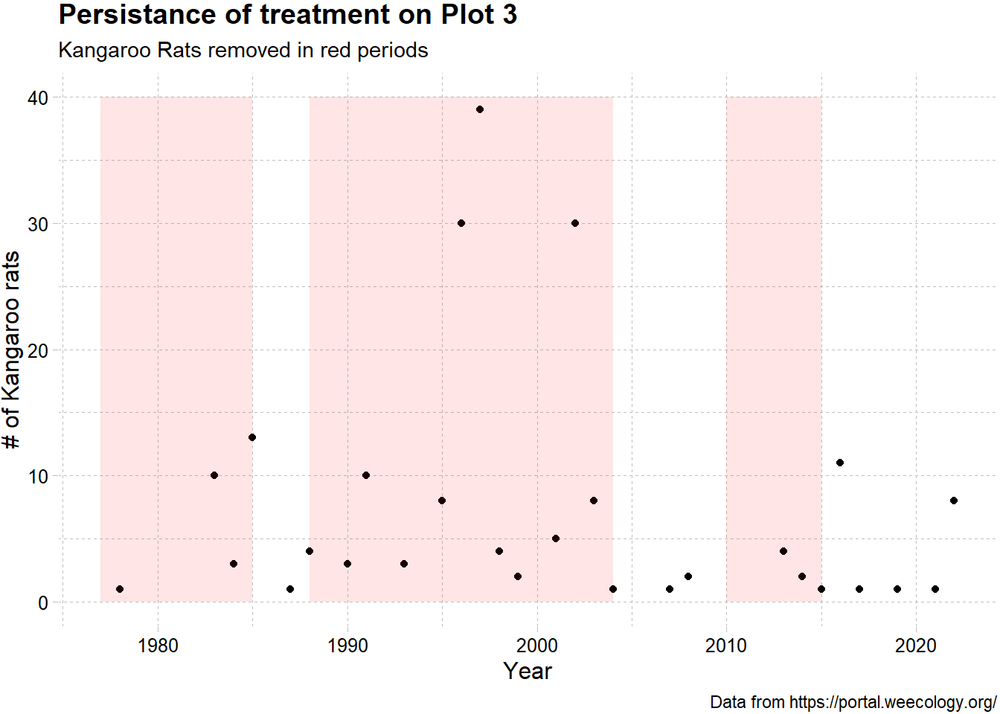

library(tidyverse)
library(ggthemes)TidyTuesday Week 18: Portal Project
R
TidyTuesday
R-code
Code-Along
Data-Viz
data validation
exploratory data analysis
TidyTuesday: Rodents of Portal Arizona
Today’s TidyTuesday is about the Portal Project, which is a long terms study on the ecology of Arizona. The study explores how ants, rodents, plants respond to climate in the desert near Portal, Az. A subset of the data is provided for this week’s TidyTuesday.
Loading libraries. Not really using anything fancy today!
Loading the data.
tuesdata <- tidytuesdayR::tt_load(2023, week = 18)--- Compiling #TidyTuesday Information for 2023-05-02 ------- There are 3 files available ------ Starting Download ---
Downloading file 1 of 3: `plots.csv`
Downloading file 2 of 3: `species.csv`
Downloading file 3 of 3: `surveys.csv`--- Download complete ---plots <- tuesdata$plots
species <- tuesdata$species
surveys <- tuesdata$surveysThis dataset focuses on rodents. The portal project also studies plants and ants, but they are ommitted from these datasets.
glimpse(plots)Rows: 8
Columns: 2
$ plot <dbl> 3, 4, 11, 14, 15, 17, 19, 21
$ treatment <chr> "exclosure", "control", "control", "control", "exclosure", "…We have information about 8 plots in the plots dataframe, and they are coded as exclosure or control. It isn’t clear what exclosure or control means. The portal website says this about treatments of the plots:
“Rodents are manipulated using gates in the fencing of each plot. Rodent removals contain no gates and any rodents captured on those plots are removed. All other plots contain 16 gates (4 per plot side); gates consist of holes cut through the hardware cloth of the fencing. Gate size is used to exclude subsets of the rodent community (larger gates allow all rodents access, smaller gates exclude kangaroo rats). Dimensions for gates on kangaroo rat removal plots are 1.9 cm x 1.9 cm, D. spectabilis removals were 2.6 cm x 3.0 cm, and control plots are 3.7 cm x 5.7 cm. In 2005, Dipodomys spectabilis removals were converted to controls – a state these plots had effectively been in with the local extinction of Dipodomys spectabilis in the late 1990s. Species caught on plots from which they are supposed to be excluded are removed from the site and the access point to the plot is located and eliminated. Plots affected by these treatments are listed in Portal_plot_treatments.”
Presumably, the exclosures are those plots designed with gates of specific sizes, designed to exclude specific size rodents. It is less clear what a control is. The text says “Dipodomys spectabilis removals were converted to controls”, which is also unclear because it also says removals contain no rodents, so the species part is confusing. This page suggests controls are “unmanipulated controls” so maybe there is no fence at all?
Looking at the history of the plots, we see that the exclosure plots all have had kangaroo rats removed from them at certain times.
So, do we find fewer Kangaroo rates on those plots? The survey data includes the rodent type by code; the key is found in the species data. Let’s pull out the kangaroo rat code(s).
rats <- species[(str_detect(species$commonname, "kangaroo")), ]
rats# A tibble: 3 × 15
species scientificname taxa commonname censustarget unidentified rodent
<chr> <chr> <chr> <chr> <dbl> <dbl> <dbl>
1 DM Dipodomys merriami Rode… Merriam's… 1 0 1
2 DO Dipodomys ordii Rode… Ord's kan… 1 0 1
3 DS Dipodomys spectabil… Rode… Banner-ta… 1 0 1
# ℹ 8 more variables: granivore <dbl>, minhfl <dbl>, meanhfl <dbl>,
# maxhfl <dbl>, minwgt <dbl>, meanwgt <dbl>, maxwgt <dbl>, juvwgt <dbl>We have three types of Kangaroo rate, coded DM, DO, and DS.
Let’s make sure the survey data only includes the plots we know about from the plots dataframe.
surveys %>% group_by(plot) %>% count(plot) # A tibble: 11 × 2
# Groups: plot [11]
plot n
<dbl> <int>
1 3 3580
2 4 3928
3 10 469
4 11 3640
5 14 3625
6 15 2106
7 16 1079
8 17 4023
9 19 2256
10 21 2681
11 23 977We definitely have plots not in our plot dataframe. This is a small enough dataset that you can just look at the two lists and see we have 10, 16, and 23 as extra plots. If we go back to the history of the plots page, we can see that these three plots all had all rodents removed at several times over the course of the project. I’ll come back to that, but first I want to demonstrate how we can find these extra plots using a join. For larger datasets, it might not be possible to determine the extra plots by inspection.
To do this, I’m going to use an antijoin from dplyr. The syntax is anti_join(x , y) and returns rows of x that do not have a match in y. So here, we want x to be the plots from the survey data, and y to be the plots from out plots. I’ll just build off the summary pipe from the previous code block.
surveys %>% group_by(plot) %>% count(plot) %>%
anti_join(plots)Joining with `by = join_by(plot)`# A tibble: 3 × 2
# Groups: plot [3]
plot n
<dbl> <int>
1 10 469
2 16 1079
3 23 977Doing this type of basic check is really important when you start working with a new dataset. It looked like we had two treatments, but there are actually 3. If you had missed this, you could have lumped the third treatment in with one of the other two while analyzing, and obtained incorrect results.
I’m going to store these other plots numbers, both as an array with counts and as a 1D object of just the plot numbers. Depending on what I decide to do, I might annotate the plots dataframe to include this data.
extra_plots_array <- surveys %>% group_by(plot) %>% count(plot) %>%
anti_join(plots)Joining with `by = join_by(plot)`extra_plots_array# A tibble: 3 × 2
# Groups: plot [3]
plot n
<dbl> <int>
1 10 469
2 16 1079
3 23 977extra_plots <- extra_plots_array$plotThere are a couple of different things that could be explored. The treatments were not applied over every time block. We can look at how persistent a given treatment is. Plot 3 had the kangaroo rats removed in three of the five time blocks (1977-1985, 1988-2004, 2010-2015). Does the survey data reflect this?
I’m going to pull out the plot 3 survey data.
plot3_survey <- surveys %>%
filter(plot == 3)There are a few different ways I could go. I’m going to create two groups of rodents: kangaroo rats and others. “NAs” are going in other. These are rodents that were caught and not identified. Perhaps using the size data, it might be possible to impute the species of rodent, but that requires more subject matter knowledge than I have.
NAs are annoying, so I’ll handle them first. Then I’ll recode everything else to be kangaroo or other. I’m just hard coding from the species name, but I could use the species labels I saved earlier (rats$species).
plot3_survey_recode <- plot3_survey %>%
mutate(species = ifelse(is.na(species) == TRUE, "OTHER", species)) %>%
mutate(species = recode(species,
"DM" = "KAN",
"DO" = "KAN",
"DS" = "KAN",
.default = "OTHER")) So, first, did the treatment work?
plot3_survey_recode %>%
group_by(species) %>%
count(species)# A tibble: 2 × 2
# Groups: species [2]
species n
<chr> <int>
1 KAN 207
2 OTHER 3373Looks like it did. But we should really compare to a control plot. Plot 4 is a control plot.
plot4_survey <- surveys %>%
filter(plot == 4) %>%
mutate(species = ifelse(is.na(species) == TRUE, "OTHER", species)) %>%
mutate(species = recode(species,
"DM" = "KAN",
"DO" = "KAN",
"DS" = "KAN",
.default = "OTHER")) %>%
group_by(species) %>%
count(species)
plot4_survey# A tibble: 2 × 2
# Groups: species [2]
species n
<chr> <int>
1 KAN 2162
2 OTHER 1766In this plot, 55% of the captured rodents are kangaroo rats, compared to about 6% in plot 3. Again, to be completely rigorous, we should probably compare data aggregated over all plots with the same treatment types, rather than a single plot from treatment and single plot from control. These weren’t even randomly picked; I chose the first one of each type on the list.
Did the kangaroo rat populations increase in years without treatment?
plot3_survey_recode %>%
filter (species == "KAN") %>% group_by(year) %>% count(species) %>%
ggplot(aes(year, n)) +
geom_point() +
annotate(
"rect",
xmin = 1977,
xmax = 1985,
ymin = 0,
ymax = 40,
alpha = .1,
fill = "red"
) +
annotate(
"rect",
xmin = 1988,
xmax = 2004,
ymin = 0,
ymax = 40,
alpha = .1,
fill = "red"
) +
annotate(
"rect",
xmin = 2010,
xmax = 2015,
ymin = 0,
ymax = 40,
alpha = .1,
fill = "red"
) +
ylab("# of Kangaroo rats") +
xlab("Year") +
labs(title = "Persistance of treatment on Plot 3",
subtitle = "Kangaroo Rats removed in red periods",
caption = "Data from https://portal.weecology.org/") +
theme_pander()
So that’s pretty interesting. The treatment did seem to be persistent. The years with the highest numbers of kangaroo rats were in times when they were actively being removed. (Perhaps the researchers were more diligent about identifying the rat species in removal period. This might be reflected in have fewer or proportionally fewer “NAs” during removal times.)
Citation
BibTeX citation:
@online{e. sinks2023,
author = {E. Sinks, Louise},
title = {TidyTuesday {Week} 18: {Portal} {Project}},
date = {2023-05-02},
url = {https://lsinks.github.io/posts/2023-05-02-tidytuesday-portal-project/portal},
langid = {en}
}
For attribution, please cite this work as:
E. Sinks, Louise. 2023. “TidyTuesday Week 18: Portal
Project.” May 2, 2023. https://lsinks.github.io/posts/2023-05-02-tidytuesday-portal-project/portal.